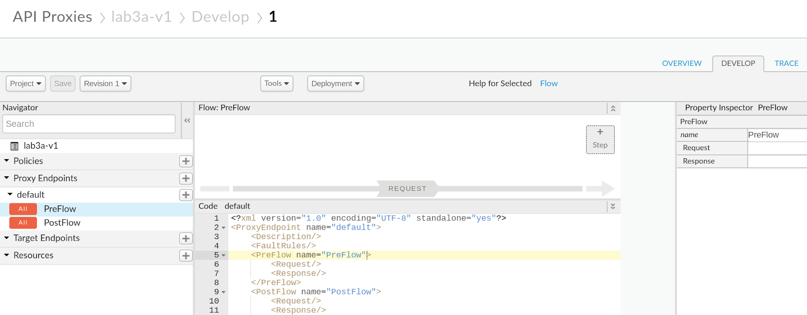

There may be cases in which you want to control which clients get access to which functionalities in your API. This can be achieved in OAuth with scopes (scopes are also generally specified via product), but there could be cases where OAuth is not used.
We'll see here one possible way to configure custom attributes in an API Product to help the API Proxy to decide at runtime if a portion of the API is allowed or not.
What you'll learn
- Control access to your API via API Key Validation
- Configure custom attributes in a product
- Create logic in the proxy to allow or deny access to functionality
Use case
Your API is using API keys for access and you need to restrict certain clients to read only access.
- Create a proxy
- Create a product
- Add a custom attribute to the product
- Create an application
- Configure the proxy for API Key and custom attribute validation
Under Develop, click on API Proxies
Click on ‘+ Proxy'
Enter the details for the proxy to be created. Select ‘No Target', click on Next
Enter the proxy details:
Proxy Name | lab3a-v1 |
Proxy Base Path | /lab3a/v1 |
Select ‘pass through' for authorization, click on Next
Deselect ‘default', and make sure ‘secure is checked for the Virtual hosts, click on Next
Finally, check the ‘test' environment and click on ‘Build and Deploy'
When done, you can click on View lab3a-v1 proxy in editor to see what's been created.
Under Publish, click on API Products

Click on ‘+ API Product'

Fill in the details
Name | lab3a |
Display Name | lab3a |
Environment | test |
Access | Public |
Automatically approve access requests | checked |
Scroll down a bit and click on ‘Add a proxy' under the API Resource session
Select the lab3a-v1 proxy. You can use the search box if you have many proxies. Click on Add:

Click on ‘Save'.
You have created a basic product with the new proxy.
Still on the product details page, click on ‘Edit'
Scroll down to the Custom attributes area and click on ‘Add a custom attribute'
Enter the details and click on ‘Add'
Name | readOnly |
Value | yes |
Click on Save.
Under the ‘Publish' menu, click on ‘Apps'

Click on ‘+ App'

Enter the details:
Name | Lab3a |
Display Name | Lab3a |
Developer | helloworld dev (or any other developer) |
Credentials Expiry | Never |
Product | lab3a |

Click on ‘Create'

Under ‘Credentials', click on ‘Show' and make a note of the newly created key. We'll use it to invoke the API in the next step.

Protect the API with an API Key Validation
Let's go back to ‘Develop' and ‘API Proxies'
Click on the lab3a-v1 proxy and go into the ‘Develop' tab

Select the ‘PreFlow'
Click on ‘+ Step' on the Request side
Select the ‘Verify API Key' policy, and set the name:
VAK-VerifyKeyand click on Add:
By default this policy will come configured to look for a query parameter called ‘apikey'. We'll leave it as is, but just note that it is a better practice to send the key as a header.
Click on Save and make sure your proxy is deployed.
Switch to the ‘trace' tab.
Check that you have the right environment selected and start a new trace session
You can append the key to the URL and click on the send button, but notice that only a valid key will be allowed:
Try again with the key from your newly created application and it should now pass

Protect the API for read only access
In the trace, if you click on the policy for the API Key Validation, you should see that the custom attribute we created in the product is available as a variable now:
We'll be using this to create a new validation that should deny access for any requests that do not use the HTTP verb GET.
Click on the Develop tab and then add a new policy, right after the Verify API Key policy by clicking on the ‘+ Step' button for the Request path:

Select the ‘Raise Fault' policy, and set the name:
RF-403ForbiddenUpdate the policy configuration to:
<RaiseFault async="false" continueOnError="false" enabled="true" name="RF-403Forbidden">
<FaultResponse>
<Set>
<StatusCode>403</StatusCode>
<ReasonPhrase>Forbidden</ReasonPhrase>
</Set>
</FaultResponse>
<IgnoreUnresolvedVariables>true</IgnoreUnresolvedVariables>
</RaiseFault>Switch to the flow configuration by clicking on the ‘Endpoint default' tab in the code session:
We'll have to add a condition to the raise fault policy to make sure it only executes when our custom attribute is set and the verb is GET.
Create a new line under line 11 and enter the following condition:
<Condition>verifyapikey.VAK-VerifyKey.apiproduct.readOnly == "yes" and request.verb != "GET"</Condition>The code should now look like:
When you invoke your API as before, from the trace, it'll still work, since the trace sends a GET request. If you invoke your API with a different verb (using a tool like the Apigee REST client), it'll now block that request:
POST /lab3a/v1?apikey={API key}And you can still see in the trace that our new policy is the one blocking the access to the API

Bonus step
Add a new product in which the custom attribute is set to false, or change the value of the attribute in the existing product and check the results.
You have successfully controlled access to your API by adding custom attributes to the product.